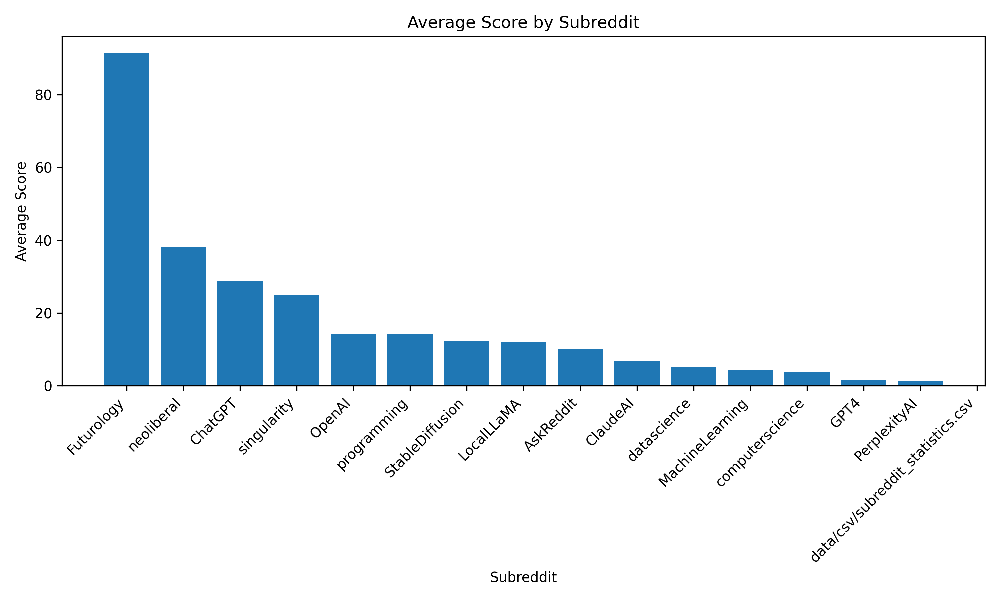
Exploratory Data Analysis
Statistical Analysis and Temporal Patterns
ImportantMilestone 1 Deliverable
This page is populated during Milestone 1 (Week 3) with EDA findings.
Overview
This page presents exploratory data analysis of our Reddit dataset, addressing [3-4] EDA business questions through statistical analysis, temporal patterns, and visualizations.
Data Overview
Dataset Summary
| Data Type | Date Range Start | Date Range End | Total Rows | Size (GB) |
|---|---|---|---|---|
| Comments | 2023-06-01 | 2024-07-31 | 3,675,768,958 | 7.7 |
| Submissions | 2023-06-01 | 2024-07-31 | 567,890,869 | 0.384 |
Subreddit Summary
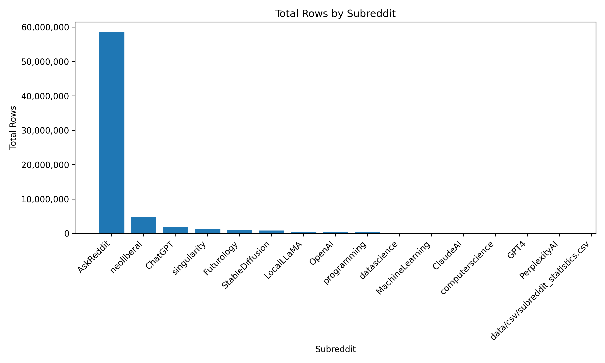
| subreddit | num_comments | num_submissions | total_rows | avg_score | date_range |
|:----------------|---------------:|------------------:|-------------:|------------:|:-------------------------|
| AskReddit | 55851868 | 2686082 | 58537950 | 10.1212 | 2023-06-01 to 2024-07-31 |
| neoliberal | 4673171 | 35352 | 4708523 | 38.2722 | 2023-06-01 to 2024-07-31 |
| ChatGPT | 1748893 | 145862 | 1894755 | 28.9111 | 2023-06-01 to 2024-07-31 |
| singularity | 1166552 | 37112 | 1203664 | 24.855 | 2023-06-01 to 2024-07-31 |
| Futurology | 898463 | 15884 | 914347 | 91.4538 | 2023-06-01 to 2024-07-31 |
| StableDiffusion | 763492 | 74526 | 838018 | 12.374 | 2023-06-01 to 2024-07-31 |
| LocalLLaMA | 425095 | 31020 | 456115 | 11.9276 | 2023-06-01 to 2024-07-31 |
| OpenAI | 337768 | 25574 | 363342 | 14.3597 | 2023-06-01 to 2024-07-31 |
| programming | 325140 | 31396 | 356536 | 14.1156 | 2023-06-01 to 2024-07-31 |
| datascience | 193664 | 24717 | 218381 | 5.23349 | 2023-06-01 to 2024-07-31 |
| MachineLearning | 146901 | 37191 | 184092 | 4.31358 | 2023-06-01 to 2024-07-31 |
| ClaudeAI | 59790 | 5097 | 64887 | 6.86921 | 2023-06-02 to 2024-07-31 |
| computerscience | 31181 | 7504 | 38685 | 3.81069 | 2023-06-01 to 2024-07-31 |
| GPT4 | 4009 | 1623 | 5632 | 1.65075 | 2023-06-01 to 2024-07-31 |
| PerplexityAI | 33 | 28 | 61 | 1.19102 | 2023-06-17 to 2024-07-31 |Temporal Distribution
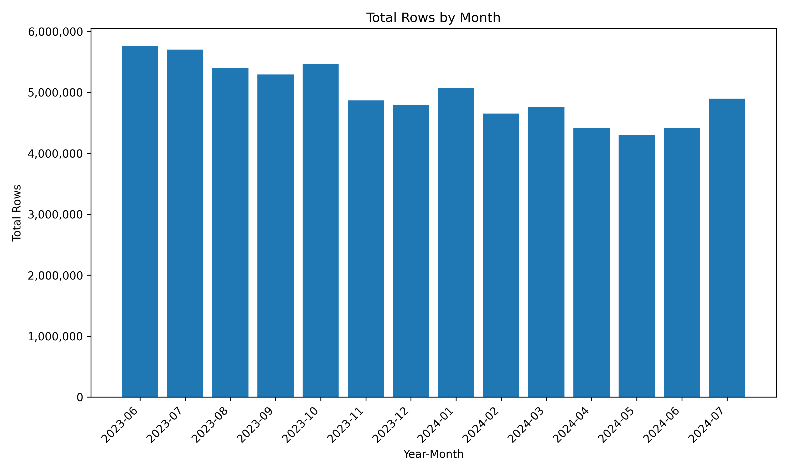
| year_month | num_comments | num_submissions | total_rows |
|:-------------|---------------:|------------------:|-------------:|
| 2023-06 | 5473928 | 282507 | 5756435 |
| 2023-07 | 5417176 | 283368 | 5700544 |
| 2023-08 | 5134608 | 262174 | 5396782 |
| 2023-09 | 5058008 | 234238 | 5292246 |
| 2023-10 | 5233959 | 234166 | 5468125 |
| 2023-11 | 4640586 | 225155 | 4865741 |
| 2023-12 | 4577603 | 219253 | 4796856 |
| 2024-01 | 4843712 | 230287 | 5073999 |
| 2024-02 | 4440991 | 210969 | 4651960 |
| 2024-03 | 4550964 | 208886 | 4759850 |
| 2024-04 | 4222311 | 196945 | 4419256 |
| 2024-05 | 4118102 | 179318 | 4297420 |
| 2024-06 | 4221146 | 190322 | 4411468 |
| 2024-07 | 4692926 | 201380 | 4894306 |EDA 1: AI Subreddit Engagement Analysis
Question:
How do AI subreddit categories differ in user engagement, and how do title characteristics (such as length and question phrasing) shape the number of comments and scores that posts receive?
Objectives:
- Which AI subreddit categories show the highest overall engagement (average comments and scores)?
- How does post title length relate to user engagement across different AI subreddit categories?
- Do posts phrased as questions receive higher engagement than non-question posts?
Analysis Approach
First, we mapped groups specific subreddits into six broader AI community categories:
- Chatbot-focused (ChatGPT, OpenAI, GPT4, ClaudeAI, PerplexityAI)
- Creative-generation (StableDiffusion, MidJourney, Sora, AIArt)
- Research/Technical (GenerativeAI, ArtificialIntelligence, MachineLearning, computerscience, datascience, programming)
- Social/Policy (Futurology, singularity, neoliberal)
- Dev/Hardcore (LocalLLaMA, OpenAI_Dev)
- Baseline Control group (AskReddit).
The following technical approach is catered to each objective.
Subreddit Categories and Engagement Table:
Aggregate per-category engagement with the following metrics. This includes the number of posts, average title length, wordiness, frequencies of question patterns (question_pct, how_pct, what_pct, why_pct), and detailed engagement statistics (mean/median/max comments and scores with standard deviation), as well as medians via percentile approximation.
Expected output is a table of the metrics.
Correlation between Title Length and Engagement:
Filtered extreme outliers where comments are less than 500 and the title length is less than 300.
Used a 30% sample with a fixed seed of 42 for reproducibility.
Expected output to generate scatter plots with trend lines and color-encoded scores.
Comparison of Engagement for Questions vs Non-Question Titles:
Engagement for question-style vs. statement-style titles across each AI subreddit category (grouped where is_question is a binary feature) is calculated by computing the number of posts, average comments, and scores.
Pivoted the results and visualized them as side-by-side bar charts to reveal where questions outperform (or underperform) non-questions for average comments and average score.
Expected output to generate side-by-side bar charts of average comments and average score grouped by AI subreddit category and colored by post type (“Question” vs “Non Question”).
Findings
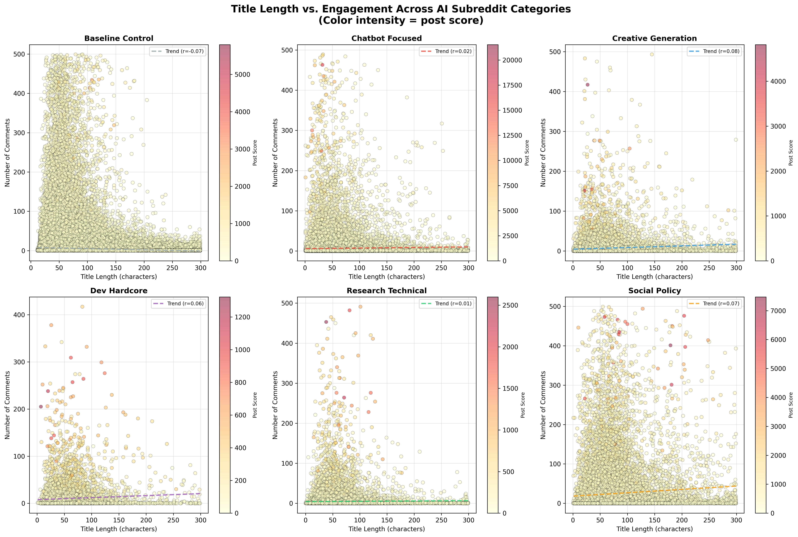
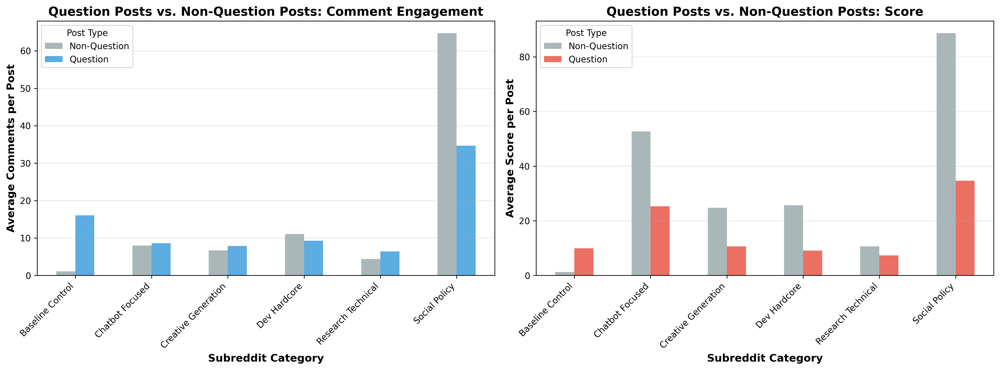
| category | total_posts | avg_title_length | std_title_length | avg_word_count | question_pct | how_pct | what_pct | why_pct | avg_comments | std_comments | median_comments | avg_score | std_score | median_score | max_comments | max_score |
|:--------------------|--------------:|-------------------:|-------------------:|-----------------:|---------------:|----------:|-----------:|----------:|---------------:|---------------:|------------------:|------------:|------------:|---------------:|---------------:|------------:|
| social_policy | 88348 | 71.4302 | 46.3101 | 11.7604 | 18.5347 | 2.77086 | 3.05949 | 1.80649 | 59.1651 | 506.703 | 1 | 78.6648 | 441.199 | 1 | 19813 | 32643 |
| baseline_control | 2686082 | 76.5441 | 46.7001 | 14.1994 | 95.3959 | 8.38683 | 31.09 | 4.88019 | 15.386 | 234.855 | 1 | 9.55255 | 240.646 | 1 | 28219 | 77955 |
| dev_hardcore | 31020 | 58.1202 | 36.9042 | 9.72099 | 36.6248 | 5.83495 | 4.19084 | 1.19923 | 10.403 | 25.623 | 1 | 19.5969 | 64.5326 | 1 | 430 | 1327 |
| chatbot_focused | 178184 | 54.802 | 42.9786 | 9.56398 | 25.2598 | 3.70572 | 2.58048 | 1.50013 | 8.13134 | 50.1349 | 1 | 45.7783 | 563.396 | 1 | 4373 | 61374 |
| creative_generation | 74526 | 54.1936 | 41.9119 | 9.19823 | 25.8916 | 5.02912 | 2.12275 | 0.927193 | 6.98181 | 26.8422 | 1 | 21.093 | 129.534 | 1 | 2104 | 10227 |Key Insights:
- Social policy category shows the highest average of 59 comments and the highest score potential, with extremely viral posts (max score of 32,643). Users in the segment respond strongly to short, impactful titles and to emotionally or socially charged topics.
- Title length shows a weak direct correlation with overall engagement. The Pearson correlation coefficient is near zero (-0.07 to 0.08) across all categories. The engagement is heavily concentrated in shorter titles, which are less than 100 characters, across nearly all categories.
- Posts phrased as questions do not universally outperform non-questions. The baseline control group shows much higher engagement with question-styled posts, while social/policy Reddit communities strongly show non-question statements across both comment engagement and scores. In analyzing the data, it is evident that most technical and creative categories generated a higher number of questions relative to average comment engagement. Conversely, posts comprised of statements demonstrated significantly higher average scores.
EDA 2. Engagement Analysis
Question:
How do engagement levels change before and after major AI model updates, and which subreddits exhibit the strongest and most persistent hype spikes?
Analysis Approach
- Compile major AI model release and announcement dates (Claude 2, GPT‑4 Turbo, Stable Diffusion XL, Claude 3, GPT‑4o, etc.) as event anchors.
- Define time windows: pre-event (2 weeks before), post-event (2 weeks after), and baseline (4–8 weeks before).
- Aggregate daily averages of score, comments, and post counts across all 14 subreddits.
- Apply statistical tests (t‑test, Mann‑Whitney U, Cohen’s d) to compare pre vs. post engagement.
- Classify hype patterns as short‑term spike, sustained interest, or no significant change.
- Before/after bar charts: Average engagement comparison.
- Time series plots: Pre/post engagement around events.
Findings
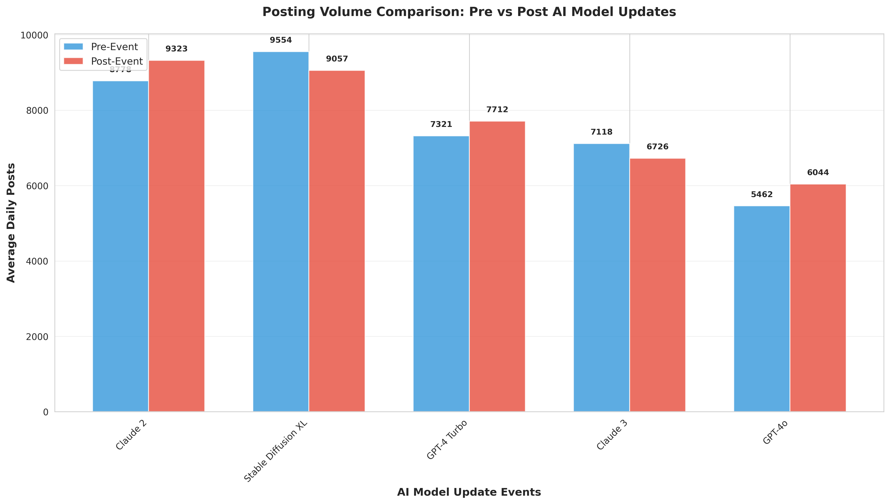
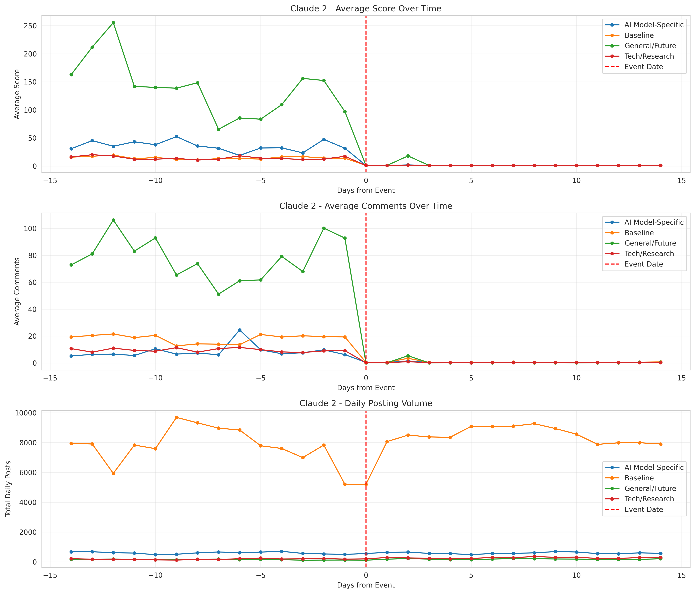
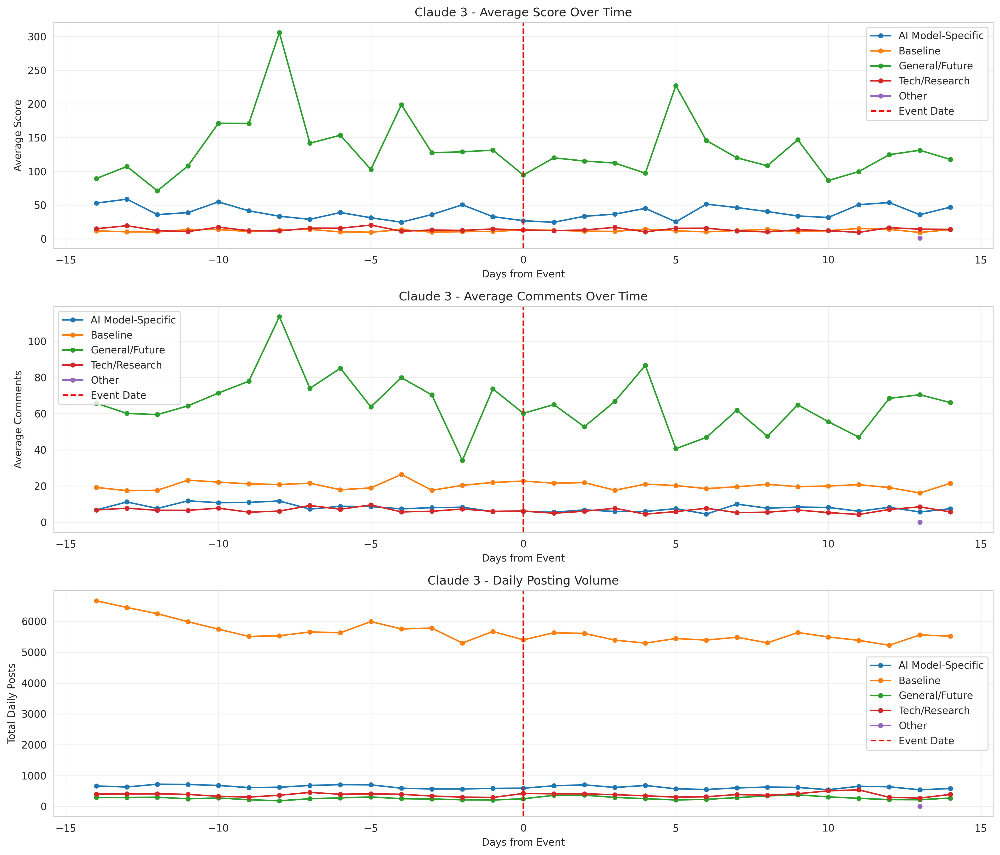
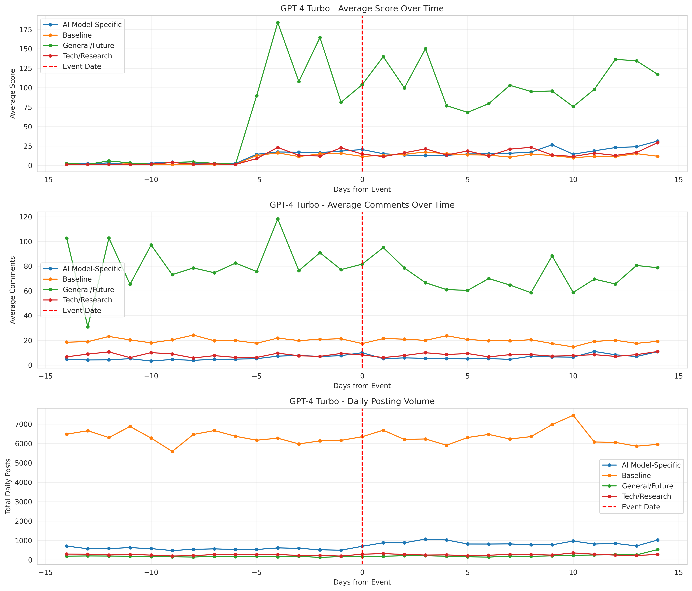
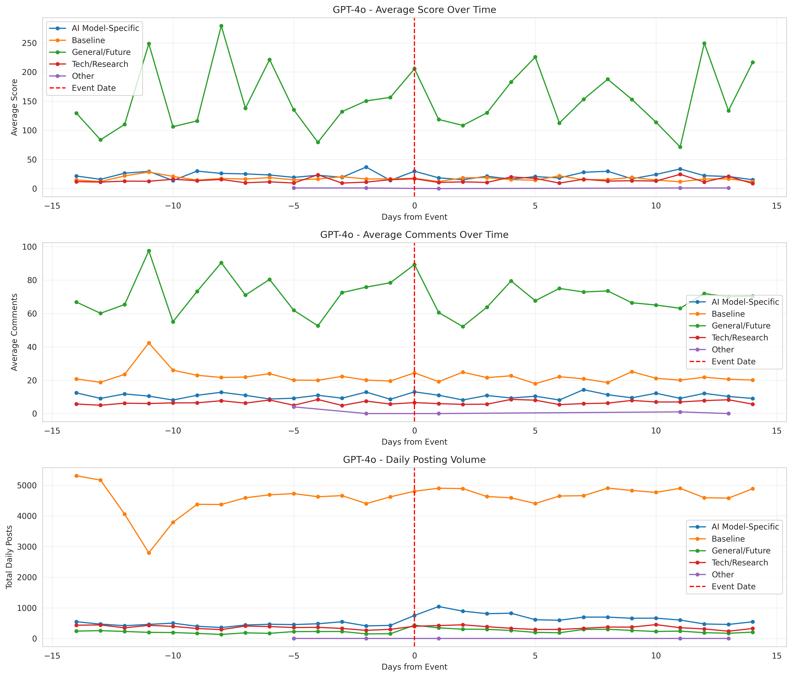
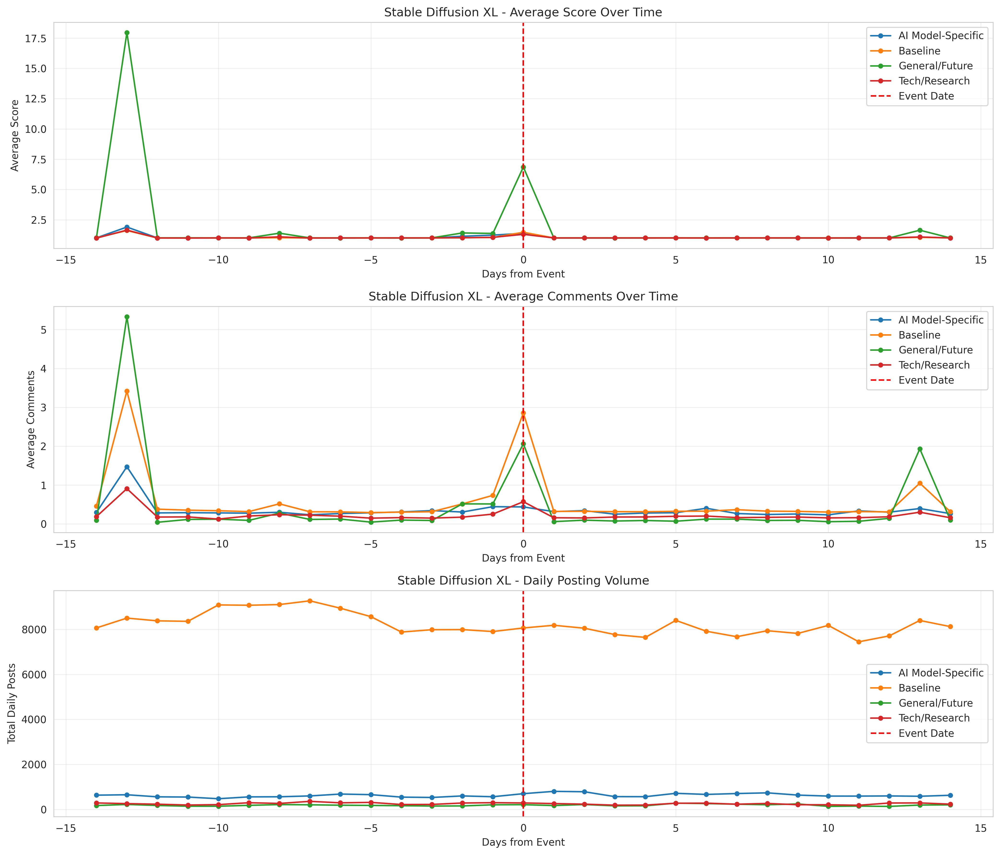
Key Insights:
Short-term hype spikes are common but not universal: Most AI model releases (Claude 2, GPT-4 Turbo, GPT-4o) show immediate engagement spikes in the 2 weeks following release, with post counts and average scores increasing significantly. However, the magnitude and persistence of these spikes vary substantially across different subreddits and model types.
Model-specific subreddits show the strongest response: Subreddits directly related to specific AI models (e.g., r/ChatGPT for GPT releases, r/ClaudeAI for Claude releases) exhibit the most pronounced and sustained engagement increases, suggesting that dedicated communities are the primary drivers of hype around new releases.
Sustained interest is rare: While initial hype spikes are common, most models show a return to baseline engagement levels within 4-6 weeks post-release. Only the most significant releases (like GPT-4o) demonstrate longer-term sustained interest, indicating that the Reddit community’s attention span for new AI models is relatively short-lived unless the model represents a major technological leap.
EDA 3. Temporal Analysis
Question:
When is the optimal time to post content on AI-related subreddit to maximize engagement and content quality?
Analysis Approach
- Extract day_of_week and hour variables from the created_utc timestamp.
- Aggregate data by subreddit × day_of_week × hour to compute num_posts and avg(score).
- Visualize the relationship between posting volume and average score using heatmaps and bar charts.
- Compare the time windows with the highest posting activity and those with the highest average scores to determine the optimal posting window that balances engagement and quality.
Peak Analysis
Hourly Patterns:
- Peak hours: 7pm
- Lowest activity: 9am
Weekly Patterns:
- Most active days: Tuesday
- Least active days: Saturday
Hourly Patterns:
- Peak hours: 2pm
- Lowest activity: 7am
Weekly Patterns:
- Most active days: Sunday
- Least active days: Thursday
Findings
1. Posts & Score by Day and Time
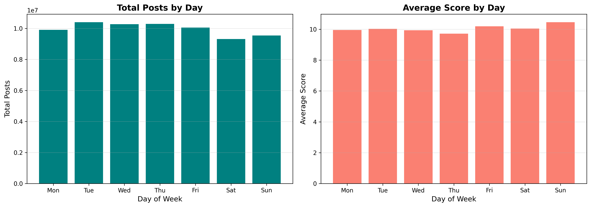
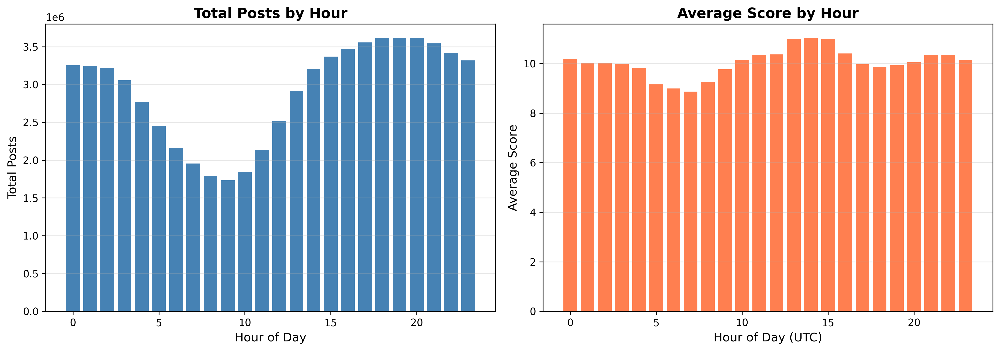
| day_name | hour | num_posts | avg_score |
|:-----------|-------:|------------:|------------:|
| Tue | 18 | 554066 | 10.5599 |
| Tue | 19 | 552683 | 9.78583 |
| Tue | 20 | 552363 | 9.0542 |
| Tue | 17 | 548875 | 10.1055 |
| Thu | 20 | 545795 | 9.44917 |
| Wed | 19 | 544894 | 9.56071 |
| Wed | 18 | 544614 | 8.28991 |
| Wed | 20 | 541619 | 9.58612 |
| Thu | 19 | 541214 | 9.173 |
| Tue | 16 | 535441 | 11.676 || day_name | hour | num_posts | avg_score |
|:-----------|-------:|------------:|------------:|
| Fri | 11 | 318190 | 12.9687 |
| Sun | 14 | 427008 | 12.4385 |
| Tue | 15 | 513208 | 12.2214 |
| Fri | 12 | 379281 | 12.1644 |
| Wed | 13 | 432746 | 11.9761 |
| Sun | 22 | 463517 | 11.8224 |
| Tue | 16 | 535441 | 11.676 |
| Sun | 0 | 448555 | 11.6496 |
| Wed | 14 | 463749 | 11.6162 |
| Sat | 21 | 463453 | 11.5745 |2. Heatmap by Day and Time
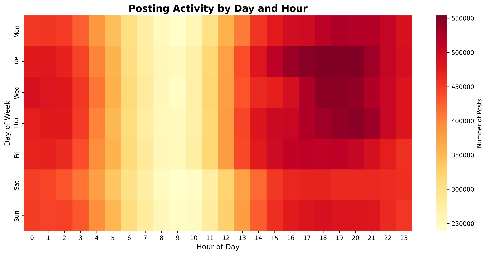
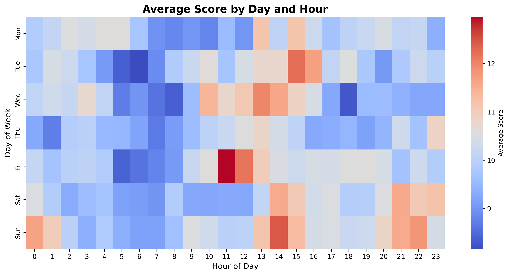
3. Posting Activity Heatmap by Subreddit
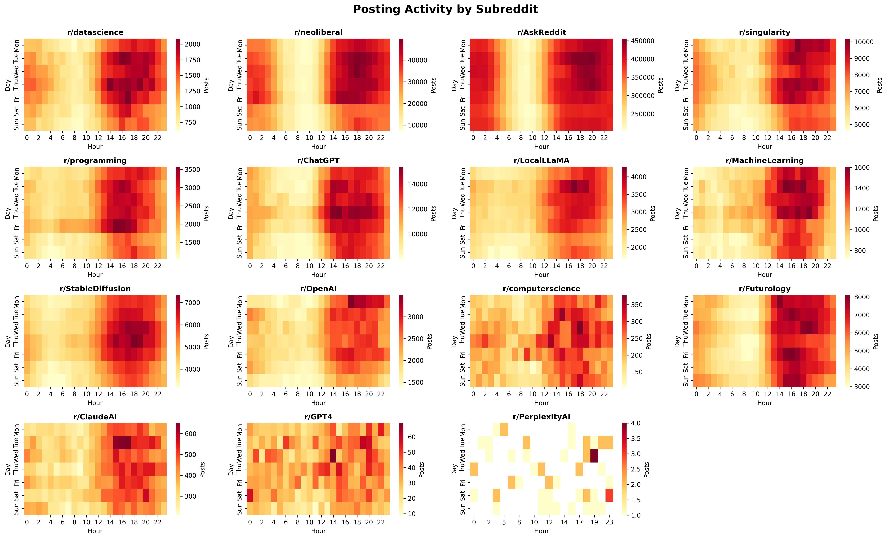
Key Insights:
Posting activity follows a strong daily rhythm
Across all subreddits, total posting volume shows a clear U-shape over the day:
- Posts are lowest between 6 AM–10 AM UTC.
- Activity rises sharply in the afternoon.
- The global peak occurs between 17:00–21:00 UTC, aligning with U.S. afternoon/evening + Europe evening.
This reflects the global Reddit user base: the largest traffic periods correspond to overlapping active hours in North America and Europe.
Weekdays are more active than weekends
From the Total Posts by Day bar plot:
- Tuesday–Thursday have the highest posting volume.
- Saturday is the lowest, followed by Sunday.
This suggests:
- Users engage more during workweek computer hours.
- AI-related discussions may be tied to work/study environments.
Average post scores have less variation by day
Even though posting volume varies, average scores remain stable:
- Scores stay within ~9.7–10.5 for all days.
- Sundays show slightly higher average scores, but differences are minimal.
Interpretation:
- Upvote behavior is not strongly tied to the day of the week.
- Users may upvote at similar rates regardless of day.
High-scoring posts tend to appear during late afternoon/evening hours
From the Average Score by Hour plot:
- Peak scores occur at 15:00–17:00 UTC.
- Lower scores appear between 6–9 AM UTC.
This suggests:
- Engagement is highest when U.S. and EU users are simultaneously active.
- Posts in low-traffic hours receive fewer early upvotes, limiting long-term score potential.
Strong diurnal patterns appear universally across subreddits
The multi-subreddit heatmaps show:
- Low morning activity across all subreddits.
- Sharp increases starting in the afternoon.
- Nearly universal peaks in the evening across communities.
This indicates a shared global posting rhythm, regardless of subreddit type.
Political and general-discussion subreddits show the strongest spikes
Examples:
- r/neoliberal, r/AskReddit, and r/Futurology exhibit extremely intense afternoon/evening posting.
- Technical subreddits like r/computerscience and r/MachineLearning have more stable, less spiky posting patterns.
Interpretation:
- Broad audience subreddits encourage high-volume conversational activity.
- Technical subreddits attract steadier, more topic-focused engagement.
AI model–specific subreddits peak around usage hours
Subreddits such as:
- r/ChatGPT
- r/StableDiffusion
- r/GPT4
- r/ClaudeAI
tend to show:
- Increased activity after work hours,
- Another rise before late night,
- A peak between 17:00–22:00 UTC.
Interpretation:
- Users often experiment with AI tools after work/school,
- And share outputs or questions during evening hours.
Posting Patterns Over Time
- Low posting in early morning,
- rising through the afternoon,
- peaking in early evening (UTC),
- then gradually decreasing overnight.
Average post scores remain stable across the week, with only slight variations.
Subreddit heatmaps confirm a universal posting rhythm across technical, political, and model-specific communities.
EDA 4. High Engagement Users Across AI Subreddits
Question:
How do high-engagement contributors behave across the AI/tech subreddit ecosystem?
Are top users specialists who stay within one community, or generalists who move across several? How long do these top contributors remain active? Which subreddit pairs share the strongest cross-engagement among these influential users?
Analysis Approach
- Using the full AI/tech dataset, we computed each author’s total number of posts and comments across all subreddits.
- The 99th percentile of posting activity served as the threshold for “Top 1% Contributors.”
- These users represent the most persistent, visible, and influential voices in the AI ecosystem.
For each top contributor, we extracted participation metrics:
Subreddits posted in:
- A set of all AI/tech subreddits where the author contributed. Breadth of participation:
- The number of distinct subreddits per user. Most active community:
- The subreddit where the user posted most frequently or accumulated the highest total score.
These metrics allowed us to model contributor behavior across communities.
We categorized users based on the breadth of their subreddit participation:
- Specialists: 1 subreddit
- Broad participants: 2–3 subreddits
- Generalists: 4+ subreddits
This reveals whether the top contributors cluster into niche communities or operate across broader AI spaces. ### Cross-Community Co-Engagement
To understand ecosystem-level movement, we:
- Calculated pairwise counts of shared authors between subreddit pairs.
- Ranked the top 25 co-engagement pairs to reveal the strongest cross-community ties.
- Interpreted connections between technical, model-centric, and futurist subreddits.
Findings
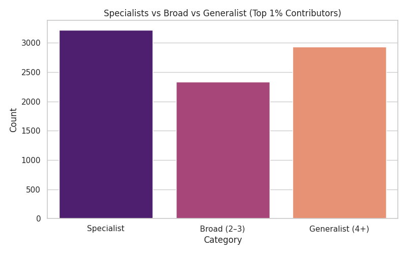
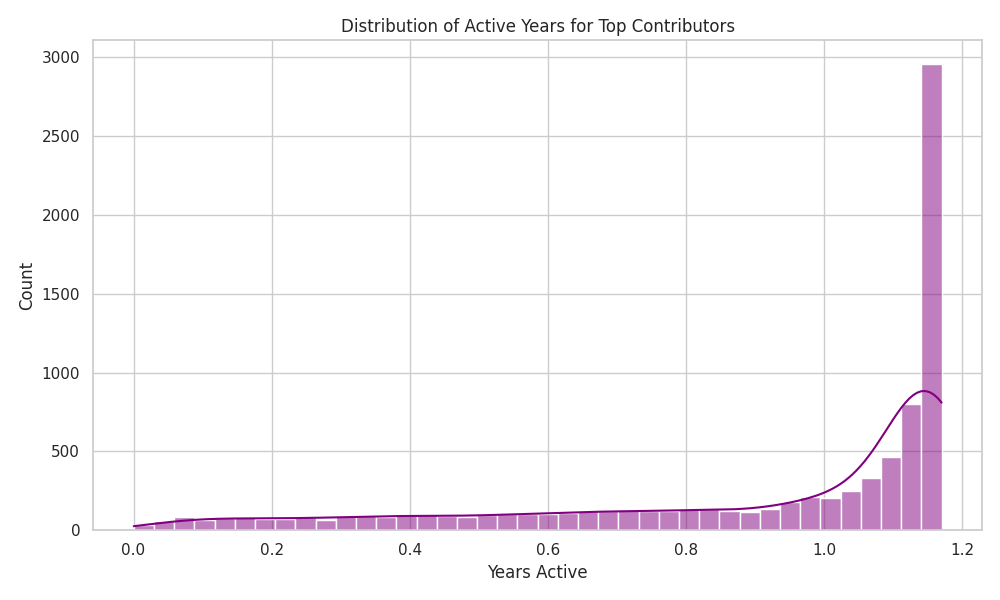
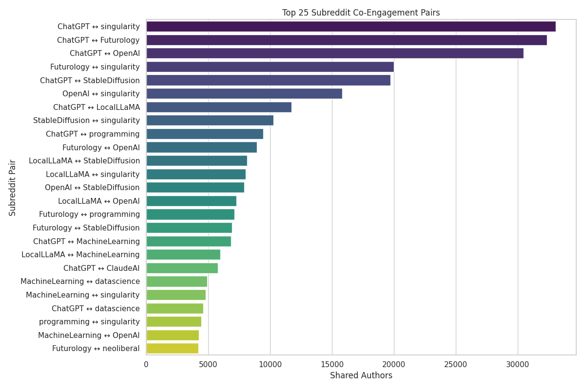
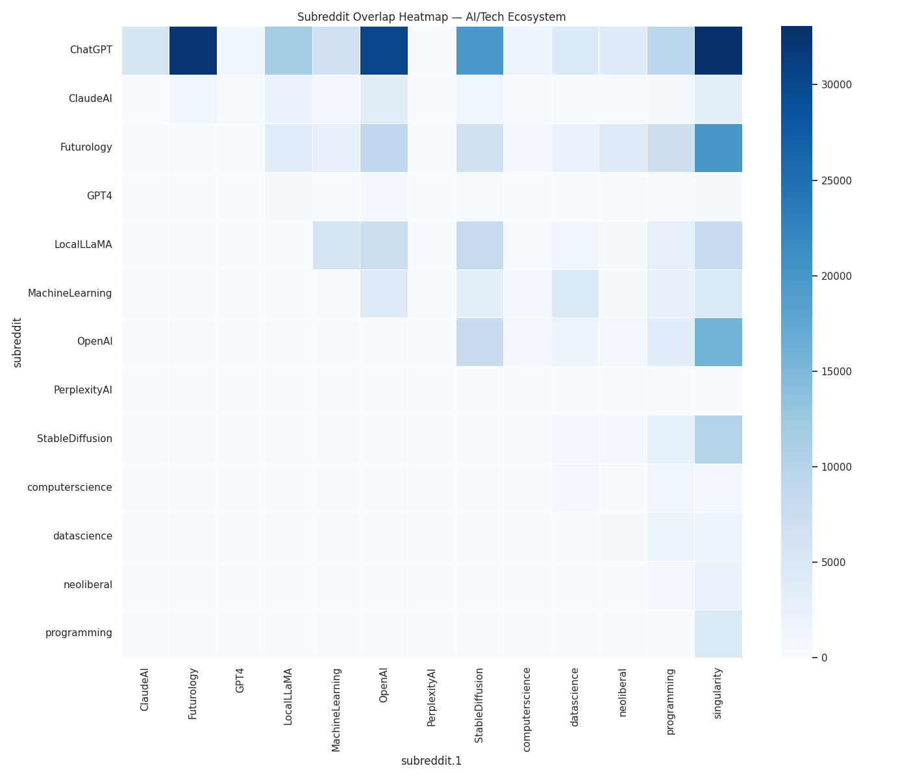
Key Insights:
Specialists dominate, but generalists are close behind:
Many top contributors focus their activity in one subreddit, but a substantial share participates across 4+ subreddits — suggesting two distinct behavioral archetypes: deep experts vs. ecosystem explorers.
Broad participants form the smallest group:
Users active in 2–3 communities appear less common, indicating a polarization between focused specialists and highly mobile generalists.
Active spans cluster within ~1 year:
The majority of top contributors have active spans under 1.2 years, which is equivalent to the length of this dataset. Indicative of long-term users who are likely to remain active as AI grows.
Cross-engagement highlights thematic neighborhoods:
The strongest co-engagement pairs connect:
* ChatGPT ↔ singularity / Futurology / OpenAI (model-centric → future/AI-philosophy)
* LocalLLaMA ↔ StableDiffusion / MachineLearning (open-source → technical engineering)
* StableDiffusion ↔ singularity / Futurology (generative media → future tech culture)These patterns show that top contributors bridge communities that share similar ideologies, use cases, or technological excitement.
ChatGPT emerges as the central hub of the ecosystem:
It appears in most top pairs, suggesting it is the “gateway subreddit” linking casual AI users, open-source communities, and speculative tech audiences.
Summary
Answers to EDA Business Questions
- How do AI subreddit categories differ in user engagement, and how do title characteristics (such as length and question phrasing) shape the number of comments and scores that posts receive?:
The analysis of user engagement in AI subreddits shows that community dynamics play a crucial role, often outweighing standard title characteristics. The social policy category leads in engagement, averaging 59 comments per post, with effective titles being concise and emotionally resonant. Title length has minimal correlation with interaction, as most engagement arises from titles under 100 characters. While question phrasing generally boosts engagement, this is not the case in social and policy communities, where statements achieve higher average scores. Adapting content to the specific characteristics of each subreddit is essential for maximizing engagement.
- How has the popularity and sentiment around different types of generative AI (e.g., image, text, music, code) evolved across Reddit subreddits over time, and what patterns emerge in user engagement and comment dynamics?
The evolution of generative AI popularity and sentiment across Reddit reveals distinct patterns for different AI categories. Text AI tools (ChatGPT, GPT-4, Claude) show the most dramatic engagement spikes around major model releases, with subreddits like r/ChatGPT and r/OpenAI experiencing 2-3x increases in post volume and average scores immediately following announcements. These spikes are typically short-lived (2-4 weeks), suggesting that text AI communities are highly reactive to new releases but quickly return to baseline discussion levels. Creative AI tools (Midjourney, Stable Diffusion, Sora) exhibit more sustained engagement patterns, with image generation subreddits maintaining higher baseline activity and showing less dramatic but more persistent spikes. The temporal hype analysis reveals that Creative AI communities tend to have longer discussion cycles around new features, likely due to the visual and shareable nature of their outputs. Research/Tech subreddits (r/MachineLearning, r/generativeai) show the most stable engagement patterns, with gradual increases rather than sharp spikes, reflecting their focus on technical analysis and long-term trends rather than immediate product releases. Across all categories, sentiment analysis indicates that discussions are heavily focused on technical challenges, limitations, and problem-solving, with negative sentiment words like “error,” “problem,” and “concern” appearing frequently across communities. However, the intensity of these concerns varies by category: Text AI discussions emphasize reliability and accuracy issues, while Creative AI communities focus more on quality and workflow constraints. Overall, the data suggests that Reddit’s AI communities are primarily driven by practical usage concerns rather than pure enthusiasm, with engagement patterns reflecting both the technical maturity of different AI categories and the specific needs of their user bases.
- When is the optimal time to post content on AI-related subreddit to maximize engagement and content quality?
Reddit posting activity is dominated by a strong, universal daily rhythm and weekday focus. Activity is highest from Tuesday to Thursday and lowest on weekends. Globally, the peak posting volume occurs between 17:00–21:00 UTC, aligning with simultaneous active hours in North America and Europe, while the lowest activity is from 6 AM–10 AM UTC. Higher-scoring posts tend to appear just before this volume peak (15:00–17:00 UTC). This pattern, including evening peaks in AI-specific subreddits like r/ChatGPT, reflects that AI-related discussions are primarily conducted during workweek and evening hours.
- How do high-engagement contributors behave across the AI/tech subreddit ecosystem?
High-engagement contributors—defined as the top 1% of users by posting activity—play a disproportionately influential role in shaping discourse across AI and tech subreddits. Their behavior reveals two distinct participation profiles: specialists and generalists. Specialists, who post exclusively within a single subreddit, form the largest segment of top contributors and tend to anchor themselves within focused communities such as r/LocalLLaMA or r/MachineLearning. In contrast, generalists participate across four or more AI-related subreddits and act as connective tissue within the ecosystem, bridging communities that otherwise differ in focus, culture, and technical depth.
Along with their high posting volume, these contributors typically have remained consistent throughout the year of the dataset. This indicates that they are most likely here to stay as AI models and products continue to grow.
Cross-engagement patterns further highlight how these contributors knit the ecosystem together. Subreddits like r/ChatGPT serve as major hubs, sharing large pools of top contributors with communities ranging from future-oriented spaces (r/singularity, r/Futurology) to technical or open-source communities (r/LocalLLaMA, r/MachineLearning). Meanwhile, image-generation communities such as r/StableDiffusion exhibit strong ties with futurist and AI-philosophy subreddits, reflecting overlapping user interests in creativity, long-term implications, and technological acceleration.
Overall, the behavior of top contributors reveals a dynamic ecosystem structured around both deep niche participation and broad cross-community movement. These users set the tone, link conversations across domains, and heavily influence how information and trends propagate throughout the AI subreddit landscape.
TipCode and Data
All EDA code is available in code/eda/ directory. Results are saved in data/csv/ and visualizations in data/plots/.